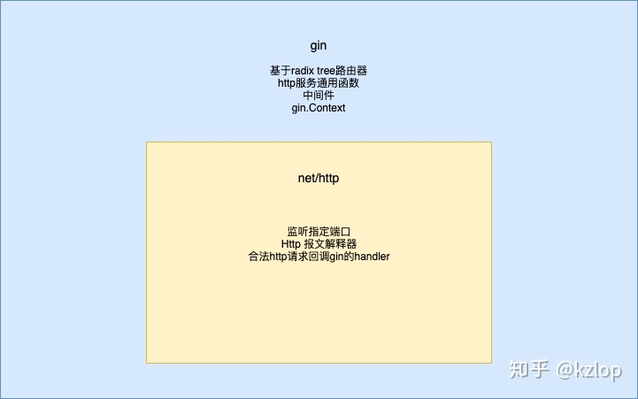

gin vs net/http
二月 23, 2021
gin 优点
- 轻量框架，提供web服务的常用工具函数(如panic捕获，json格式校验等等)。开发者可以以少量代码，轻松构建web服务。
- 以中间件抽象通用逻辑（如鉴权，检验入参，日志审计等逻辑），供一个或一组URL使用，提高代码复用率。
- 基于上述的中间件特性，代码具有很强的可扩展性。
- 支持常见的render模板(json, xml, html, yaml, string), 满足轻松动态资源，后端api服务等多种业务场景。
- 更高的路由匹配效率。
- 使用context池，减少runtime的GC工作量。
net/http 和 gin 的关系
gin更像是一个功能强大的路由器，提供更便捷的web服务解决方案，而其余功能则复用net/http。
网络层实现，http parser 都是由 net/http 实现的。
强大的工具包: gin.Context
gin.Context 的功能
在日常的web服务开发中，我们总会频繁地使用以下功能：
获取query参数
读取POST或PUT的请求体
请求体的反序列化以及响应体的序列化
读写 HTTP Header
读写 cookie
而gin.Context, 作为一个web框架通用函数工具包，涵盖了上述的功能。
此前，笔者没有阅读源码之前，一直以为gin.Context实现了context.Context的Deadline函数，可以用来做一些熔断相关的功能，
但其实并没有，类似的功能还是要依赖 net/http 的 Request.Context()来实现。
gin.Context 的优势
效率更高的路由器：Radix Tree
net/http 路由器的实现
gin 路由器的实现: radix tree
两种路由器实现的效率差异
更优雅的抽象：中间件
查看评论